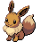
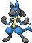

macOS（Apple / Intel）/ Windows · 免费开源
把宝可梦
养在桌面上
1025 只全国图鉴 · 会走会飞 · 能摸能扔
还会跟着你的鼠标跑



正在识别你的系统…
下载
装好之后：Mac 版右键 → 打开；Windows 版解压后双击 exe。装好以后能自动更新。
会走会飞贴着你的窗口来回走，会飞的能升空
能摸能扔摸头压扁冒爱心，抓起来扔出去会弹
收进精灵球晃三晃，再点一下「噗」地出来
1025 只随便挑按属性、世代搜，点进化链就能换